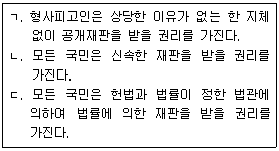
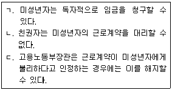
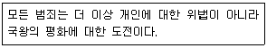
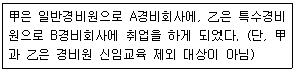
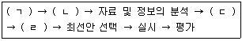
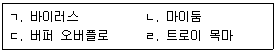
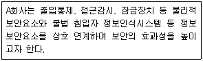

경비지도사-1차(법학개론,민간경비론) (2020-11-21 기출문제)
1과목: 법학개론
1. 법원(法源)에 관한 현행법의 설명으로 옳지 않은 것은?
- 상사에 관하여 상관습법은 민법에 우선하여 적용된다.
- 대법원 판결은 모든 사건의 하급심을 기속한다.
- 민사관계에서 조리는 성문법과 관습법이 존재하지 않는 경우에 적용된다.
- 민사관계에서 법령 중의 선량한 풍속 기타 사회질서에 관계없는 규정과 다른 관습이 있는 경우에 당사자의 의사가 명확하지 아니한 때에는 그 관습에 의한다.
(정답률: 52%)

2. 법의 효력에 관한 설명으로 옳지 않은 것은?
- 「국제사법(國際私法)」에 따르면 사람의 권리능력은 우리나라 법에 의한다.
- 속지주의는 한 국가의 법은 자국의 영토 내에 있는 모든 사람에게 적용된다는 주의를 말한다.
- 구법(舊法)과 신법 사이의 법적용의 문제를 해결하기 위해 제정된 법을 경과법이라고 한다.
- 헌법에 의하면 법률은 특별한 규정이 없는 한 공포한 날로부터 20일을 경과함으로써 효력을 발생한다.
(정답률: 45%)
3. 우리나라 법의 체계에 관한 설명으로 옳은 것은?
- 대법원규칙은 법률과 동등한 효력을 가진다.
- 대통령령과 총리령은 동등한 효력을 가진다.
- 헌법에 의하여 체결ㆍ공포된 조약은 국내법에 우선한다.
- 대통령은 법률의 효력을 가지는 긴급명령을 발할 수 있다.
(정답률: 53%)
4. 법의 분류에 관한 설명으로 옳지 않은 것은?
- 절차법에서는 원칙적으로 신법우선의 원칙이 적용된다.
- 일반법과 특별법이 충돌하는 경우에는 특별법이 우선한다.
- 당사자가 임의법과 다른 의사를 표시한 때에는 그 의사에 의한다.
- 사회법은 사법(私法)원리를 배제하고, 공공복리의 관점에서 사회적 약자보호와 실질적 평등을 목적으로 한다.
(정답률: 46%)
5. 우리나라 소송에 관한 설명으로 옳지 않은 것은?
- 사실의 인정은 증거에 의하여야 한다.
- 사실확정에 있어서 추정은 반증에 의해 그 효과가 부인될 수 있다.
- 증인신문은 원칙적으로 법원의 신문 후에 당사자에 의한 교호신문(交互訊問)의 형태로 진행된다.
- 형사소송에서 피고인의 자백이 그 피고인에게 불이익한 유일의 증거인 때에는 이를 유죄의 증거로 하지 못한다.
(정답률: 48%)
6. ‘민법 제3조는 “사람은 생존한 동안 권리와 의무의 주체가 된다.”라고 규정하고 있으므로 원칙적으로 태아에게는 권리능력이 인정되지 않는다’라고 하는 해석은?
- 축소해석
- 반대해석
- 물론해석
- 유추해석
(정답률: 43%)
7. 권리에 관한 설명으로 옳지 않은 것은?
- 친권은 권리이면서 의무적 성질을 가진다.
- 인격권은 상속이나 양도를 할 수 없는 것이 원칙이다.
- 청구권적 기본권으로는 청원권, 재판청구권, 환경권 등이 있다.
- 물건에 대한 소유권은 권리이고, 그 사용권은 권능에 해당한다.
(정답률: 52%)
8. 상대방의 권리를 승인하지만 그 효력발생을 연기하거나 영구적으로 저지하는 효과를 발생시키는 권리는?
- 형성권
- 항변권
- 지배권
- 상대권
(정답률: 54%)
9. 개인적(주관적) 공권에 해당하는 것은?
- 참정권
- 입법권
- 사법권
- 사원(社員)권
(정답률: 56%)
10. 헌법상 명문 규정이 없는 헌법보호수단은?
- 저항권
- 계엄선포권
- 위헌법률심판제도
- 정당해산심판제도
(정답률: 48%)
11. 헌법상 신체의 자유에 관한 설명으로 옳지 않은 것은?
- 모든 국민은 고문을 받지 아니할 권리가 있다.
- 모든 국민은 형사상 자기에게 불리한 진술을 강요당하지 아니한다.
- 누구든지 체포 또는 구속을 당한 때에는 즉시 국선변호인의 조력을 받을 권리를 가진다.
- 누구든지 체포 또는 구속을 당한 때에는 적부의 심사를 법원에 청구할 권리를 가진다.
(정답률: 54%)
12. 헌법상 국회의 권한에 관한 설명으로 옳지 않은 것은?
- 국회는 국가의 예산안을 심의ㆍ확정한다.
- 국회는 국무총리의 해임을 대통령에게 건의할 수 있다.
- 국회는 특정한 국정사안에 대하여 조사할 수 있다.
- 국회는 정부의 동의 없이 정부가 제출한 지출예산 각항의 금액을 증가할 수 있다.
(정답률: 56%)
13. 헌법상 재판청구권에 관한 설명으로 옳은 것을 모두 고른 것은?

- ㄱ, ㄴ
- ㄱ, ㄷ
- ㄴ, ㄷ
- ㄱ, ㄴ, ㄷ
(정답률: 52%)
14. 헌법상 탄핵 대상이 아닌 자는?
- 국무위원
- 국회의원
- 헌법재판소 재판관
- 중앙선거관리위원회 위원
(정답률: 54%)
15. 민법상 소멸시효제도에 관한 설명으로 옳은 것은?
- 지상권은 소멸시효의 대상이 된다.
- 소멸시효의 이익은 미리 포기할 수 있다.
- 소멸시효 완성의 효력은 소급되지 않는다.
- 소멸시효는 법률행위에 의하여 이를 연장할 수 있다.
(정답률: 27%)
16. 경비업자 甲에게 소속된 경비원 乙의 업무 중 불법행위로 인하여 제3자 丙이 손해를 입었다. 이에 관한 설명으로 옳은 것은?
- 丙은 甲에게 직접 손해배상을 청구할 수 없다.
- 乙은 丙에 대하여 일반 불법행위책임을 진다.
- 甲에 갈음하여 그 사무를 감독하는 자는 손해배상책임을 부담하지 않는다.
- 甲이 丙에게 손해를 배상한 경우, 乙의 귀책사유가 없더라도 배상한 손해 전부에 대하여 乙에게 구상권을 행사할 수 있다.
(정답률: 44%)
17. 민법상 합유에 관한 설명으로 옳은 것은?
- 합유는 조합계약에 의하여만 성립한다.
- 합유물의 보존행위는 합유자 각자가 할 수 없다.
- 합유자는 전원의 동의없이 합유물에 대한 지분을 처분하지 못한다.
- 합유가 종료하기 전이라도 합유물의 분할을 청구할 수 있다.
(정답률: 41%)
18. 경비업체 甲과 상가 건물의 건물주 乙이 경비계약을 체결하였다. 이 계약의 법적 성질로 옳은 것은?
- 매매계약성
- 편무계약성
- 요물계약성
- 낙성계약성
(정답률: 43%)
19. 민법상 이행지체에 따른 효과가 아닌 것은?
- 계약해제권
- 대상(代償)청구권
- 손해배상청구권
- 강제이행청구권
(정답률: 41%)
20. 경비업자 甲은 경비업무 중 취득한 고객 乙의 개인적인 비밀을 부주의로 누설하여 손해를 입혔다. 이에 관한 설명으로 옳지 않은 것은?
- 甲은 채무불이행에 의한 손해배상책임을 질 수 있다.
- 甲은 乙의 재산적 손해에 대하여 배상책임을 진다.
- 乙에게 정신적 손해가 발생하였더라도 甲은 이에 대하여 배상책임을 지지 않는다.
- 甲에게 불법행위책임을 묻는 경우, 행위와 결과에 대한 인과관계의 증명책임은 乙이 부담한다.
(정답률: 47%)
21. 경비업자 甲은 경비계약 위반을 이유로 고객 乙에게 손해배상청구소송을 제기하여 승소하였다. 이후 乙이 판결내용에 따른 이행을 하지 않는 경우, 甲이 국가기관의 강제력에 의하여 판결내용을 실현하기 위한 절차는?
- 독촉절차
- 강제집행절차
- 집행보전절차
- 소액사건심판절차
(정답률: 51%)
22. 형사소송법에 관한 설명으로 옳지 않은 것은?
- 규문주의가 기본 소송구조이다.
- 국가소추주의를 규정하고 있다.
- 형법을 적용ㆍ실현하기 위한 절차를 규정하는 법률이다.
- 실체적 진실주의, 적법절차의 원칙, 신속한 재판의 원칙을 지도이념으로 한다.
(정답률: 35%)
23. 형사소송법상 법관이 불공정한 재판을 할 염려가 있는 경우에 검사 또는 피고인의 신청에 의하여 그 법관을 직무에서 탈퇴하게 하는 제도는?
- 제척
- 기피
- 회피
- 진정
(정답률: 41%)
24. 형사소송법상 고소에 관한 설명으로 옳지 않은 것은?
- 고소의 취소는 대리가 허용되지 않는다.
- 고소는 제1심 판결선고 전까지 취소할 수 있다.
- 고소를 취소한 자는 동일한 사건에 대하여 다시 고소하지 못한다.
- 친고죄의 고소기간은 원칙적으로 범인을 알게 된 날로부터 6월이다.
(정답률: 38%)
25. 형법상 범죄의 성립과 처벌에 관한 설명으로 옳지 않은 것은?
- 범죄의 성립과 처벌은 행위시의 법률에 의한다.
- 범죄후 법률의 변경에 의하여 그 행위가 범죄를 구성하지 아니하거나 형이 구법보다 경한 때에는 신법에 의한다.
- 재판확정후 법률의 변경에 의하여 그 행위가 범죄를 구성하지 아니하는 때에는 형의 집행을 면제한다.
- 대한민국 영역 외에서 ‘우표와 인지에 관한 죄’를 범한 외국인에게는 우리나라 형법을 적용할 수 없다.
(정답률: 45%)
26. 형법상 국가적 법익에 관한 죄가 아닌 것은?
- 소요죄
- 도주죄
- 위증죄
- 직무유기죄
(정답률: 41%)
27. 형사소송법상 상소에 관한 설명으로 옳지 않은 것은?
- 상소의 제기기간은 7일이다.
- 상소장은 원심법원에 제출하여야 한다.
- 법원의 결정에 대해 불복하는 상소는 상고이다.
- 검사는 피고인의 이익을 위하여 상소할 수 있다.
(정답률: 43%)
28. 형사소송에서 ‘사실인정의 기초가 되는 경험적 사실을 경험자 자신이 직접 법원에 진술하지 않고, 타인의 진술 등의 방법으로 간접적으로 법원에 보고하는 형태의 증거는 원칙적으로 증거능력이 인정되지 않는다’는 원칙은?
- 전문법칙
- 자백배제법칙
- 자백의 보강법칙
- 위법수집증거배제원칙
(정답률: 42%)
29. 상법상 유효하게 사망보험 계약을 체결할 수 있는 자는?
- 15세 미만자
- 심신상실자
- 70세 이상인 자
- 의사능력 없는 심신박약자
(정답률: 47%)
30. 상법상 주식회사의 최고의결기관은?
- 대표이사
- 이사회
- 감사위원회
- 주주총회
(정답률: 49%)
31. 상법상 상업사용인에 관한 설명으로 옳지 않은 것은?
- 지배인의 선임과 그 대리권의 소멸에 관한 사항은 등기사항이다.
- 영업의 특정한 종류 또는 특정한 사항에 대한 위임을 받은 사용인에 관한 사항은 등기사항이다.
- 영업의 특정한 종류 또는 특정한 사항에 대한 위임을 받은 사용인은 이에 관한 재판 외의 모든 행위를 할 수 있다.
- 지배인은 영업주에 갈음하여 그 영업에 관한 재판상 또는 재판 외의 모든 행위를 할 수 있다.
(정답률: 20%)
32. 상법상 보험계약에 관한 설명으로 옳지 않은 것은?
- 보험금의 지급자는 보험자이다.
- 보험수익자는 인보험에서만 존재한다.
- 보험료 반환의무는 보험계약자가 부담한다.
- 생명보험의 보험계약자는 보험수익자를 지정 또는 변경할 권리가 있다.
(정답률: 39%)
33. 생활이 어려운 사람에게 필요한 급여를 실시하여 이들의 최저생활을 보장하고 자활을 돕는 것을 목적으로 하는 법률은?
- 국민연금법
- 최저임금법
- 국민기초생활보장법
- 산업재해보상보험법
(정답률: 56%)
34. 근로기준법상 미성년자의 근로에 관한 설명으로 옳은 것을 모두 고른 것은?

- ㄱ, ㄴ
- ㄱ, ㄷ
- ㄴ, ㄷ
- ㄱ, ㄴ, ㄷ
(정답률: 38%)
35. 산업재해보상보험법에 관한 설명으로 옳은 것은?
- 「산업재해보상보험법」은 가구 내 고용활동에는 적용되지 않는다.
- 「산업재해보상보험법」에 따른 산업재해보상보험 사업은 보건복지부장관이 관장한다.
- 근로자의 업무와 상당인과관계가 없는 재해도 업무상 재해로 인정된다.
- 사망한 자의 사실혼 관계에 있는 배우자는 유족급여 대상이 아니다.
(정답률: 36%)
36. 국민연금법에 관한 설명으로 옳은 것은?
- 국민연금 수급권은 담보로 제공할 수 있다.
- 국민연금공단 이사장은 보건복지부장관이 임명한다.
- 「국민연금법」에 따른 급여는 연금급여와 실업급여로 구분된다.
- 국민연금 가입자는 사업장가입자, 지역가입자, 임의가입자 및 임의계속가입자로 구분한다.
(정답률: 41%)
37. 행정청의 처분 등이나 부작위에 대하여 제기하는 행정소송은?
- 항고소송
- 기관소송
- 민중소송
- 당사자소송
(정답률: 38%)
38. 행정청이 행정목적을 달성하기 위하여 부과한 일반적ㆍ상대적 금지를 일정한 요건을 갖춘 경우에 해제하여 일정한 행위를 적법하게 할 수 있게 하는 행정행위는?
- 인가
- 특허
- 확인
- 허가
(정답률: 48%)
39. 행정법상 행정주체가 아닌 것은?
- 영조물법인
- 공공조합
- 지방자치단체
- 행정각부의 장관
(정답률: 45%)
40. 행정주체의 의사를 결정할 수는 있지만 이를 대외적으로 표시할 권한이 없는 행정기관은?
- 행정청
- 의결기관
- 집행기관
- 자문기관
(정답률: 37%)
2과목: 민간경비론
41. 민간경비의 개념에 관한 설명으로 옳지 않은 것은?
- 실질적 개념의 민간경비는 고객의 생명과 신체에 대한 위해를 방지하고 재산을 보호하는 제반활동으로 인식된다.
- 형식적 개념의 민간경비는 경비관련 제반활동의 특성과 관계없이 실정법에서 규정하는지의 유무에 따른다.
- 형식적 개념은 공경비와 민간경비가 명확히 구별된다.
- 광의의 개념은 국민의 생명과 재산을 보호하기 위하여 일정한 비용을 지불한 특정고객에게 안전관리 서비스를 제공하는 개인만을 의미한다.
(정답률: 58%)
42. 민간경비업무에 관한 내용으로 옳지 않은 것은?
- 시설경비를 실시함으로써 절도, 강도 등의 범죄 억제효과 및 수사를 통한 피해회복
- 대규모 행사장의 혼잡을 적절하게 해소하여 참가자의 안전 확보에 기여
- 국내외의 정치ㆍ경제ㆍ체육계 요인 등을 경호함으로써 사회불안과 혼란을 미연에 방지
- 국가중요시설의 경비업무를 담당하여 국민의 불안을 경감하고 불법 가해행위를 미연에 방지
(정답률: 60%)
43. 경비업법상 경비업무로 명시되어 있지 않은 것은?
- 신변보호업무
- 시설경비업무
- 인력경비업무
- 호송경비업무
(정답률: 69%)
44. 민간경비의 성장이론과 그 내용의 연결이 옳지 않은 것은?
- 비용공동부담이론 - 경기 침체로 인해 실업자가 증가하면 범죄율이 증가하고 민간경비의 발전으로 이어진다는 이론
- 수익자부담이론 - 경찰의 공권력 작용은 질서유지나 체제수호 등과 같은 거시적 역할에 한정하고 개인이나 집단의 안전과 보호는 해당 개인이나 집단이 담당하여야 한다는 이론
- 공동화이론 - 경찰이 수행하고 있는 본연의 기능이나 역할을 민간경비가 보완하거나 대체하면서 성장했다는 이론
- 이익집단이론 - ‘그냥 내버려두면 보호받지 못한 채로 방치될 재산을 민간경비가 보호한다’는 시각에서 출발한 이론
(정답률: 61%)
45. 민간경비에 관한 설명으로 옳지 않은 것은?
- 민간경비의 역할은 범죄예방 및 손실감소이다.
- 민간경비원은 현행범을 영장없이 체포할 수 있다.
- 민간경비의 주체는 영리기업이다.
- 민간경비업자는 불특정 다수인에게 경비서비스를 제공할 의무가 있다.
(정답률: 62%)
46. 민영화이론에서 말하는 민영화의 내용에 관한 설명으로 옳지 않은 것은?
- 자원이용의 효율성을 높일 수 있다.
- 민간의 활동이 활성화될 수 있다.
- 공공지출과 행정비용의 증가효과를 유발하기 위한 방법이다.
- 재화나 서비스의 생산이 공공분야에서 민간분야로 이전되는 것이다.
(정답률: 59%)
47. 범죄자에 대한 처벌은 국왕에 의해서 처벌되어야 한다는 의미로 다음 주장을 한 사람은?

- 헨리 필딩(Henry Fielding)
- 함무라비(Hammurabi) 국왕
- 로버트 필(Robert Peel)
- 헨리(Henry) 국왕
(정답률: 62%)
48. 핑거톤(Allan Pinkerton)에 관한 설명으로 옳은 것은?
- 보우가의 주자(Bow Street Runner)에 영향을 주었다.
- 서부개척시대에 치안의 공백을 메우는 역할을 수행하였다.
- 링컨대통령의 경호를 담당한 것은 남북전쟁 종료 이후부터이다.
- 프로파일링 수사기법과는 무관하다.
(정답률: 58%)
49. 각국의 민간경비산업 현황에 관한 설명으로 옳은 것은?
- 미국의 민간경비산업은 계약경비시스템에서 상주경비시스템으로 변화하며 성장하고 있다.
- 일본의 민간경비산업은 다양한 영역에서 운영되고 있으며, 전문자격증제도를 운영하고 있다.
- 영국의 민간경비산업은 제1차 세계대전을 계기로 크게 발전하였다.
- 독일의 민간경비산업의 시장은 유럽에서 가장 낮은 비중을 차지하고 있다.
(정답률: 57%)
50. 각국의 경비업 허가에 관한 설명으로 옳은 것은?
- 미국은 대부분 주정부 차원에서 경비업 허가가 이루어지므로 주에 따라 규제방식과 실태가 다르다.
- 독일에서는 국가경찰청장이 경비업의 허가권자이다.
- 일본에서 경비업을 하고자 하는 자는 경시청에 신고하여야 한다.
- 우리나라에서는 법인이 아니라도 경비업 허가 대상이 될 수 있다.
(정답률: 52%)
51. 각국 민간경비원의 실력행사에 관한 설명으로 옳은 것은?
- 미국의 민간경비원은 타인의 재산에 대한 침해를 막을 수 있는 경우에만 예외적으로 정당성을 인정받는다.
- 일본의 민간경비원은 형사법상 문제발생시 일반 사인(私人)과 동일하게 취급된다.
- 독일은 민간경비원의 실력행사에 관한 명시적 규정을 두고 있으며, 예외적인 경우 공권력의 행사로 인정받는다.
- 한국의 민간경비원은 법률상 실력행사에 관한 특별한 권한을 가지고 있다.
(정답률: 55%)
52. 우리나라의 치안환경에 관한 설명으로 옳지 않은 것은?
- 우리나라 인구구조의 특징상 혼자 사는 여성들이 범죄에 노출될 가능성이 높다.
- 1인 가구 증가로 조직범죄가 줄어들고 있다.
- 청소년범죄가 흉포화되고 있다.
- 고령화 현상으로 생계형 노인범죄가 사회적 문제로 대두되고 있다.
(정답률: 65%)
53. 현대사회 범죄의 양상으로 옳지 않은 것은?
- 외국인범죄의 증가
- 마약범죄의 증가
- 저연령화
- 경제범죄의 감소
(정답률: 64%)
54. 경찰이 관내의 각 가정, 기업체, 기타 시설을 방문하여 범죄예방, 선도, 안전사고 방지 등에 대해 지도ㆍ계몽하는 활동은?
- 방범심방
- 임의동행
- 방범단속
- 불심검문
(정답률: 55%)
55. 치안서비스 공동생산이론에 관한 내용으로 옳지 않은 것은?
- 자율방범대 운용의 활성화
- 민간경비는 공경비의 보조적 차원의 역할 수행
- 민간경비의 적극적 참여 유도
- 목격한 범죄행위 신고, 증언행위의 중요성 강조
(정답률: 48%)
56. 기계경비의 장점에 관한 설명으로 옳지 않은 것은?
- 24시간 지속적인 감시가 가능하다.
- 장기적으로는 운용비용의 절감효과가 있다.
- 사건발생시 현장에서의 신속한 대처가 용이하다.
- 야간에는 경비의 효율성이 더욱 증대된다.
(정답률: 63%)
57. 자체경비와 계약경비에 관한 설명으로 옳은 것은?
- 계약경비는 자체경비보다 상대적으로 이직률이 낮은 편이다.
- 계약경비는 자체경비보다 사용자의 비용부담이 상대적으로 저렴하다.
- 자체경비는 경비회사로부터 훈련된 경비원을 파견받아서 운용한다.
- 계약경비는 자체경비보다 사용자에 대한 충성심이 높은 편이다.
(정답률: 59%)
58. 경비업법령상 다음 사례에서 甲과 乙이 각각 이수하여야 하는 신임교육의 시간을 모두 합한 숫자는?

- 102
- 112
- 122
- 132
(정답률: 50%)
59. 경비업법상 특수경비원의 결격사유로 명시되어 있지 않은 것은?
- 만 18세 미만인 자
- 금고 이상의 형의 집행유예선고를 받고 그 유예기간중에 있는 자
- 파산선고를 받고 복권되지 아니한 자
- 피특정후견인
(정답률: 62%)
60. 경비업법령상 기계경비지도사 자격취득을 위하여 경찰청장이 시행하는 경비지도사 시험에 합격하고 받아야 하는 ‘행정안전부령이 정하는 교육’의 과목에 해당하지 않는 것은?
- 기계경비개론
- 기계경비기획및설계
- 인력경비개론
- 기계경비현장실습
(정답률: 41%)
61. 경비위해요소 분석에 관한 설명으로 옳은 것은?
- 경비위해요소 분석단계는 ‘비용효과분석 → 위해요소 손실발생 예측 → 위해요소 인지 → 위해정도 평가’이다.
- 경비위해요소의 형태는 인위적 위해만을 말한다.
- 효과적인 경비프로그램을 실행하기 위해서는 경비위해요소 분석과 조사가 선행되어져야 한다.
- 모든 경비대상 시설물에 대해 동일하게 표준화된 인력경비와 기계경비시스템을 적용하여야 한다.
(정답률: 56%)
62. 경비업법상 경비지도사의 직무로 명시되어 있지 않은 것은?
- 집단민원현장에 배치된 경비원에 대한 지도ㆍ감독
- 경비원의 지도ㆍ감독ㆍ교육에 관한 기록의 유지
- 소방기관과의 연락방법에 대한 지도
- 의뢰인의 요구사항을 파악하여 지도
(정답률: 55%)
63. 경비의 중요도에 따른 분류 중 상위수준경비(Level Ⅳ)에 해당하는 설명은?
- 전혀 패턴이 없는 외부 및 내부의 활동을 발견ㆍ억제하고 문제를 해결하도록 하는 경비이다.
- 중요교도소, 중요군사시설, 정부의 특별연구기관 등에서 시행되고 있는 수준의 경비이다.
- 대부분의 패턴이 없는 외부 및 내부행동을 발견ㆍ방해하도록 계획된 경비이다.
- 단순한 물리적 장벽과 자물쇠가 설치되고 보강된 출입문 등이 설치된 수준의 경비이다.
(정답률: 36%)
64. 경비계획의 수립과정에 맞게 ( )에 들어갈 내용을 순서대로 옳게 나열한 것은?

- ㄱ: 목표의 설정, ㄴ: 문제의 인지, ㄷ: 전체계획 검토, ㄹ: 비교검토
- ㄱ: 문제의 인지, ㄴ: 전체계획 검토, ㄷ: 비교검토, ㄹ: 목표의 설정
- ㄱ: 문제의 인지, ㄴ: 목표의 설정, ㄷ: 전체계획 검토, ㄹ: 비교검토
- ㄱ: 비교검토, ㄴ: 문제의 인지, ㄷ: 목표의 설정, ㄹ: 전체계획 검토
(정답률: 57%)
65. 외곽경비에 관한 설명으로 옳은 것은?
- 비상구나 긴급목적을 위한 출입구의 경우 평상시에는 개방되어 있어야 한다.
- 자연적 방벽에는 인공적인 구조물을 설치해서는 안 된다.
- 폐쇄된 출입구의 경우 확인이 필요하지 않다.
- 외곽경비의 근본 목적은 내부의 시설ㆍ물건 및 사람을 보호하기 위한 것이다.
(정답률: 52%)
66. 경비조명에 관한 설명으로 옳지 않은 것은?
- 프레이넬등은 특정한 지역에 빛을 집중시키거나 직접적으로 비출 필요가 있을 때 사용하는 등이다.
- 상시조명은 장벽이나 벽의 외부를 비추는데 사용되며, 감옥이나 교정기관에서 주로 이용되어 왔다.
- 조명시설의 위치가 경비원의 시야를 방해해서는 안 되며, 가능한 한 그림자가 생기지 않도록 설치해야 한다.
- 조명은 침입자의 침입의도를 사전에 포기하도록 하는 심리적 압박작용을 한다.
(정답률: 48%)
67. 국가중요시설경비에 관한 설명으로 옳은 것은?
- 국가중요시설의 분류에 따라 국가보안상 국가경제, 사회생활에 중대한 영향을 미치는 행정시설을 가급으로 분류한다.
- 경비구역 제3지대(핵심방어지대)는 시설의 가동에 결정적으로 영향을 미치는 특성을 갖는 구역이다.
- 제한구역은 비인가자의 출입이 일체 금지되는 보안상 극히 중요한 구역이다.
- 통합방위사태는 4단계(갑ㆍ을ㆍ병ㆍ정)로 구분된다.
(정답률: 39%)
68. 경보시스템에 관한 설명으로 옳지 않은 것은?
- 일반적으로 진동감지기는 전시 중인 물건이나 고미술품 보호를 위하여 설치한다.
- 압력감지기는 침입이 예상되는 통로나 출입문 앞에 설치한다.
- 제한적 경보시스템은 전화회선 등을 이용하여 외부의 경찰서 등으로 비상사태가 감지되면 자동으로 연락이 취해지는 경보체계이다.
- 전자파울타리는 레이저광선을 그물망처럼 만들어 전자벽을 만드는 것이다.
(정답률: 51%)
69. 재난에 대한 경비요령으로 옳지 않은 것은?
- 평상시 순찰활동을 통해 건물의 축대나 벽면의 균열 및 붕괴 여부 등을 확인ㆍ점검한다.
- 재난발생시 경찰관서나 소방관서 등 관계기관에 신속히 신고한다.
- 부상자에 대한 의료구조와 방치된 사람에 대한 피난처 확보에 주력한다.
- 경찰관과 협력하여 비상지역에 대한 접근과 대피가 불가능하도록 통로를 폐쇄한다.
(정답률: 58%)
70. 컴퓨터 범죄의 특징으로 옳지 않은 것은?
- 살인 및 상해와 같은 범죄에 비해 죄의식이 희박하다.
- 단순한 유희나 향락을 목적으로 하기도 하나, 회사에 대한 개인적인 보복으로 범해지기도 한다.
- 컴퓨터 부정조작의 경우 행위자가 조작방법을 터득하게 되면 임의로 사용이 가능하기 때문에 조작행위가 빈번할 가능성이 높다.
- 컴퓨터 범죄는 다른 범죄에 비해 고의의 입증이 용이하다.
(정답률: 57%)
71. 컴퓨터 범죄의 수법에 관한 설명으로 옳은 것은?
- 컴퓨터의 일정한 작동시마다 부정행위가 이루어질 수 있도록 프로그램을 조작하는 수법은 데이터 디들링(Data Diddling)이다.
- 악성코드에 감염된 사용자 PC를 조작하여 금융정보를 빼내는 수법은 스푸핑(Spoofing)이다.
- 금융기관의 컴퓨터 시스템에서 이자 계산이나 배당금 분배시 단수 이하의 적은 수를 특정 계좌로 모이게 하는 수법은 살라미 기법(Salami Techniques)이다.
- 프로그램 속에 은밀히 범죄자만 아는 명령문을 삽입하여 이를 이용하는 수법은 스팸(Spam)이다.
(정답률: 51%)
72. 쓰레기통이나 주위에 버려진 명세서 또는 복사물을 찾아 습득하는 등 ‘쓰레기 주워 모으기’라고 불리는 컴퓨터 범죄 수법은?
- 메모리해킹(Memory Hacking)
- 스캐빈징(Scavenging)
- 슈퍼재핑(Super Zapping)
- 스미싱(Smishing)
(정답률: 53%)
73. 사이버공격의 유형에서 멀웨어(Malware) 공격을 모두 고른 것은?

- ㄱ, ㄴ, ㄷ
- ㄱ, ㄴ, ㄹ
- ㄱ, ㄷ, ㄹ
- ㄴ, ㄷ, ㄹ
(정답률: 42%)
74. 컴퓨터 범죄 예방대책에 관한 설명으로 옳지 않은 것은?
- 거래기록 파일 등 데이터 파일에 대한 백업을 할 때는 내부와 외부에 이중으로 파일을 보관해서는 안 된다.
- 도큐멘테이션(Documentation)에 대한 백업을 할 때는 ‘사용중인 업무처리 프로그램의 설명서’, ‘주요 파일 구성내용 및 거래코드 설명서’ 등을 포함시켜야 한다.
- 컴퓨터실 위치선정시 화재, 홍수, 폭발 및 외부의 불법침입자에 의한 위험을 고려하여야 한다.
- 프로그래머는 기기조작을 하지 않고 오퍼레이터는 프로그래밍을 하지 않는다는 원칙을 철저히 준수한다.
(정답률: 40%)
75. 우리나라 민간경비의 역사적 발전에 관한 설명으로 옳은 것은?
- 1972년 용역경비업법이 제정되어 법적 기반이 마련되었다.
- 1978년 사단법인 한국용역경비협회가 설립되었다.
- 1995년 경찰청에서는 용역경비의 담당을 방범과에서 경비과로 이관했다.
- 2001년 경비업법의 개정으로 청원경찰이 도입되었다.
(정답률: 46%)
76. 우리나라 민간경비산업의 문제점과 개선방안으로 옳지 않은 것은?
- 청원경찰에게 총기 휴대가 금지되어 있어 실제 사태 발생시 큰 효용을 거두지 못하고 있다.
- 보험회사들의 민간경비업에 대한 이해부족은 보험상품 개발을 꺼리는 요인이 되고 있다.
- 민간경비원의 교육과정은 교육과목이 많고 내용도 비현실적이라는 지적이 있다.
- 경찰과 민간경비와의 긴밀한 협력을 위해 지속적인 인적ㆍ물적 지원이 이루어져야 한다.
(정답률: 50%)
77. 우리나라 민간경비산업에 관한 설명으로 옳지 않은 것은?
- 1993년 대전엑스포에서는 민간경비업체가 경비업무에 참여하였다.
- 민간조사제도는 아직까지 법제화되지 못했다.
- 초기 국내 기계경비산업은 외국과의 합작 또는 기술제휴 방식으로 이루어졌다.
- 현재 경비원에 대한 교육시설은 각 광역지방자치단체장이 지정하여 고시하고 있다.
(정답률: 57%)
78. 외국에서는 찾아보기 어려운 우리나라의 제도로 경찰과 민간경비의 과도기적 시기에 만들어진 제도는?
- 특수경비원제도
- 전문경비제도
- 청원경찰제도
- 기계경비업무
(정답률: 60%)
79. 다음 사례에 해당되는 개념은?

- 융합보안
- 절차적 통제
- 방화벽
- 정보보호
(정답률: 66%)
80. 국내 민간경비산업의 발전방안 및 전망에 관한 설명으로 옳지 않은 것은?
- 경찰과 민간경비업계는 차별적 관계에 있다는 인식을 확립해 나가야 한다.
- 과거에 비해 기계경비의 비중이 높아지고 있으며, 이 경향은 앞으로도 지속될 것이다.
- 민간경비업체들의 영세성을 탈피하기 위한 경비업체 업무의 다변화가 필요하다.
- 인구 고령화 추세에 따른 긴급통보시스템, 레저산업 안전경비 등 각종 민간경비 분야가 발전할 것으로 전망된다.
(정답률: 57%)